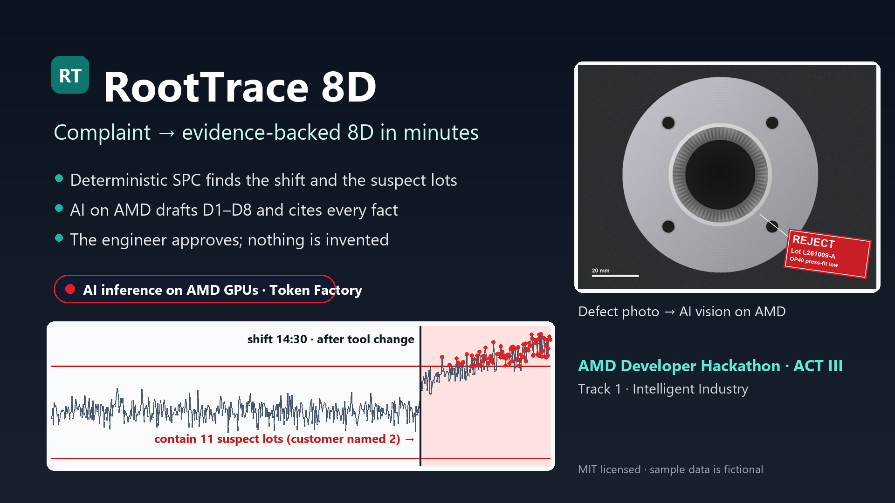

From customer complaint to evidence-backed 8D report in minutes
Deterministic SPC + AI on AMD + engineer sign-off
Line stops at the customer, sorting at both plants, chargebacks, a lower supplier rating. Each 8D also takes hours to days of engineer time.
Quality engineers at Tier-1 and Tier-2 automotive and industrial component suppliers (IATF 16949 plants)
Contain fast, prove the root cause with data, and write an 8D the customer accepts
Excel, paper SPC sheets, email threads and a blank 8D template
"I don't need a chatbot. I need to know which lots to stop and why, and I need numbers I can defend in front of the customer."
| # | Step | Engine |
|---|---|---|
| 1–3 | Read inputs → SPC (I-MR limits, Western Electric rules, Cp/Cpk, change point, containment) → correlate with the maintenance log | deterministic |
| 4 | Extract complaint facts with verbatim quotes | AI on AMD |
| 5 | Classify the defect photo (vision) | AI on AMD |
| 6 | Rank 6M root-cause hypotheses with supporting and contradicting evidence | AI on AMD |
| 7 | Draft the 8D, D1–D8. D3 containment is fixed to the computed suspect lots | AI on AMD |
| 8 | Number-trace check: flags any figure not found in the evidence | deterministic |
Then the engineer edits and approves each section and exports a PDF. Unapproved sections print as DRAFT.

For every AI step: provider · model · live/cached · latency · tokens in/out · attempts. Judges and users can see exactly what ran on AMD.
Every fact gets an ID (S4, L6, P2…). Hypotheses and sections must cite them, and invented IDs are dropped.
SPC numbers come from code. A trace check flags any number the AI wrote that is not in the evidence.
Each section goes from AI draft to edited to approved. An edit after approval needs re-approval, and DRAFT is watermarked on export.
Uncertainty is shown: confidence levels, contradicting evidence (for example, the coolant dip came 32 h after the shift), and "not stated" facts.
SAM ≈ plants × price × 12. For example, 10,000 EU + NA supplier plants × €400/month ≈ €48M ARR. Value per plant: fewer escapes and engineer hours saved on every 8D.
| QMS suites | SPC software | Generic AI chat | RootTrace 8D | |
|---|---|---|---|---|
| Finds the shift and the suspect lots | ✗ | charts only | ✗ | ✓ computed |
| Drafts the 8D narrative | template | ✗ | ✓ but invents numbers | ✓ evidence-cited |
| Reads photos and complaint emails | ✗ | ✗ | partly | ✓ |
| Human approval and audit trail | ✓ | ✗ | ✗ | ✓ |
| Runs on your own AMD hardware | – | – | ✗ | ✓ |
[Your name] · builder
Built with Spec-Driven Development: constitution → spec → plan → tasks → implementation